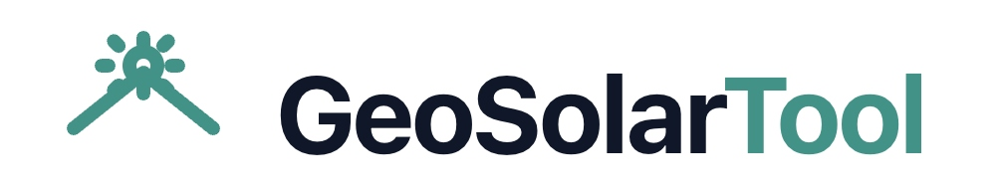

GeoSolarTool combina mapas satelitales, dibujo geoespacial y motores de cálculo fotovoltaico para generar diagnósticos técnicos, layouts de paneles y reportes en PDF listos para presentar.

Una plataforma pensada para instaladores, consultoras e ingeniería comercial que necesita evaluar sitios de forma rápida y técnicamente sólida.
Encuentra cualquier ciudad, colonia o dirección en México y navega directo al sitio de análisis sobre imagen satelital.
Delimita polígonos y rectángulos sobre el techo, marca obstrucciones y obtén el área neta aprovechable automáticamente.
Identifica automáticamente subzonas aprovechables dentro del área delimitada y estima su potencial combinado en kWp.
Simula la distribución real de módulos con espaciado, orientación y modo manual o automático de colocación.
Compara escenarios técnicos, calcula generación anual estimada, rendimiento específico y cobertura de demanda.
Genera un reporte técnico listo para presentar a clientes con mapa, métricas, layout y notas de ingeniería.
Un flujo simple diseñado para que cualquier consultor técnico pueda generar un diagnóstico confiable sin curva de aprendizaje.
Escribe la ciudad o dirección y el mapa satelital te lleva directo al predio.
Dibuja el techo o superficie útil y marca obstrucciones como tinacos o tragaluces.
Define uso del inmueble, tipo de cubierta y parámetros técnicos del sistema fotovoltaico.
Revisa el escenario óptimo y descarga el análisis completo en PDF con un clic.
Cada análisis muestra disponibilidad de sitio, subzonas detectadas, capacidad fotovoltaica, generación estimada y requerimientos de inversor en una sola vista.
Desde vivienda residencial hasta naves industriales, GeoSolarTool se adapta al tipo de inmueble y arquitectura de cubierta.
Evalúa techos inclinados o losa plana, estima consumo mensual y dimensiona sistemas residenciales con precisión.
Analiza grandes superficies, detecta microáreas aprovechables y compara escenarios de offset energético.
Genera reportes profesionales en PDF para presentar propuestas técnicas y comerciales a clientes finales.
GeoSolarTool está documentado como proyecto open source: arquitectura modular, guías de contribución y despliegue estático listo para Vercel o GitHub Pages.
No necesitas instalar nada. Abre GeoSolarTool, busca un sitio y genera tu primer reporte técnico en minutos.